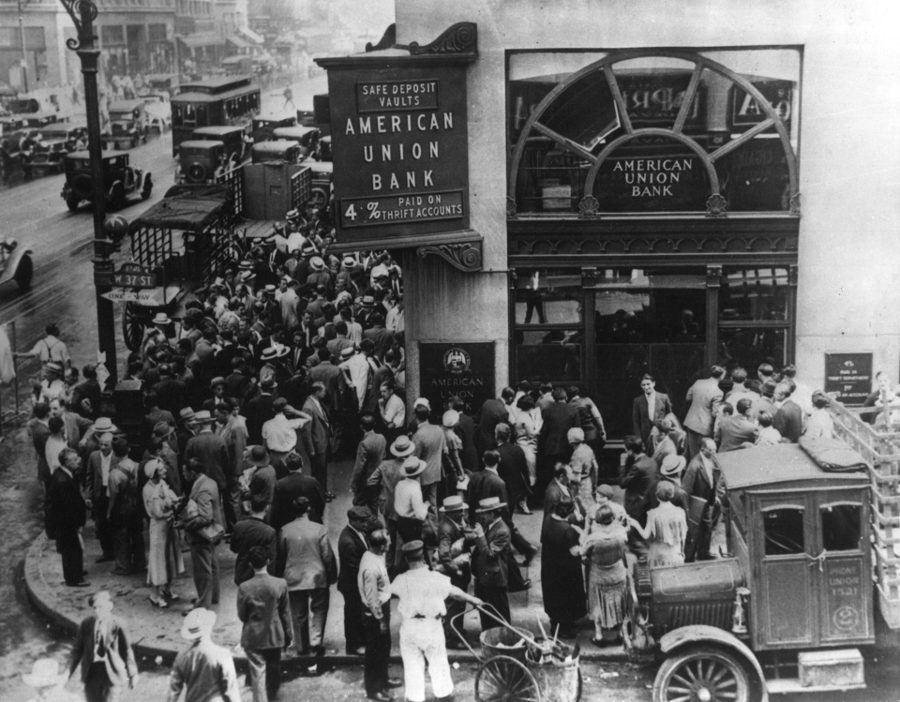
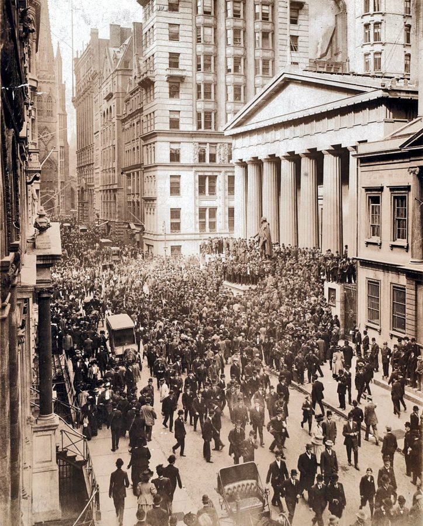
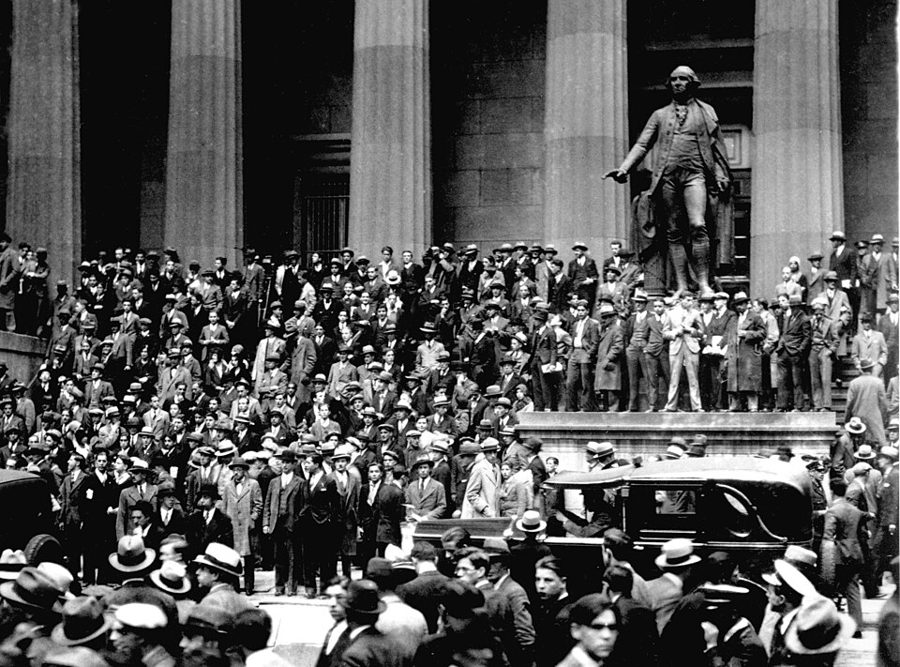
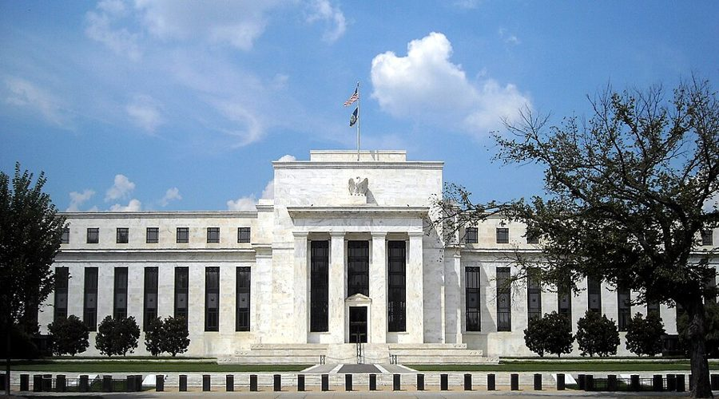

这一章在做什么
这一章讲大萧条。作者要推翻一个流行了半个世纪的看法：大萧条证明市场不稳定，所以政府该多管。作者认为正好相反，那是一次政府失灵：1913 年为防止银行恐慌而设的联邦储备体系，在 1929–1933 年眼看三分之一的货币消失、约一万家银行消失，几乎没有出手。证据是 1907 年那次恐慌的对照、联储内部的权力之争和黄金的流向。读的时候抓两条线：联储本该做什么；一次政府的失败，为什么换来了更大的政府。

1931 年，纽约 American Union Bank 门口挤兑的人群。这家银行 1917 年开业，1931 年 6 月 30 日关门。它不是本章 §5 那家「美国银行」，但那几年纽约街头常见这样的场面。National Archives Photo，公有领域，维基共享资源 读之前：先下注
第 1 章说过两件事：「政府失灵」和「市场失灵」一样会发生；一个机构的本意和它实际干成的事，常常是两回事。这一章是这两句话的第一个大案例。第 2 章讲贸易和计划，这一章把镜头转到货币和银行，回答一个更大的问题：美国政府为什么从 1930 年代起越变越大。第 4 章的福利国家从这里接上；货币和通胀的道理，作者留到第 9 章展开。
1929–1933 年的大萧条为什么会那么深？你觉得最主要的原因是什么？
1929 年股市崩盘吓坏了所有人，消费和投资一起垮了
资本主义本身不稳定：生产过剩、需求不足，迟早要来一次大危机
联邦储备体系任由货币缩水三分之一，眼看银行一家家倒闭也不出手
美国 1930 年大幅提高关税，掐断了世界贸易
危机从欧洲传来：战争债务和金本位把别国的麻烦带进了美国
假如 1913 年没有建立联邦储备体系，1930 年代的银行危机会怎样？
更糟：没有中央银行兜底，银行会倒得更多
差不多：挤兑是人心惶惶，谁也管不住
要看有没有别的办法，比如早几年就搞存款保险
轻得多：银行会像以前那样联手暂停兑现，几个月就止住
没什么不同：危机主要是从国外传进来的
一个专为防止银行恐慌而建立的机构，为什么在美国史上最大的一场银行恐慌里袖手旁观？这次失败，又为什么让它和整个政府的权力都变大了？
作者说 deposit（存款）是英语里最误导人的词之一。你存进银行的钱到底在哪里？这和一家好好的银行会被挤垮有什么关系？§2
作者断定，没有联储的话 1930 年的恐慌会像 1907 年那样很快收场。这个反事实推理，你觉得站得住吗？§5
作者用黄金往哪边流来判断萧条从哪国开始。这个推理要成立，需要哪些前提？§6
联储失败了，权力却变大了。作者举了哪些细节？你觉得这是偶然，还是有规律？§6
这一章的论证骨架
这一章大体按时间走：§1 先亮出论点，§2–§5 讲 1907 年到 1933 年的经过，§6 回头逐条论证。容易乱的是 §2：作者在讲 1907 年恐慌和联储的诞生中间，插了一大段银行原理（存款、准备金、公开市场操作），这段原理是后面所有判断的基础，值得慢读。另外，1907 和 1930 两场危机的对照不在 §2，而在 §5 的中段。
通行的解读 · §1
市场不稳定，政府要多管
作者的解读 · §1
是政府管货币失了职
1907 恐慌：银行联手暂停兑现 · §2
1913 建立联储：最后贷款人 · §2
本意：让暂停
兑现不再必要
1928 Strong 去世，联储内斗 · §3
1929–30 货币缓慢减少 · §4
1930–33 三轮银行危机，联储观望 · §5
本该：大量
买入债券
货币少了三分之一，银行少了约一万家 · §5
证据 · §6
纽约联储的买债建议被否决
头两年黄金流入美国
结局 · §6
失败的联储反而扩了权
货币与通胀留到第 9 章
本站画的示意图。§3 的权力之争是一条暗线：作者认为它决定了 1930 年代联储为什么不听纽约的建议。 边读边填：每行一个问题，读到答案就写一两句。只存在你这台设备的浏览器里，别人看不到。
读完了？对照我找到的
机制：准备金只有存款的一小部分（1907 年是 12%），现金被拿回家后，银行要维持比率只能收缩贷款，存款跟着缩。
旧办法：银行联手「限制支付」，转账照做、现金不兑；现金短缺到要 104 元存款换 100 元现金；整个衰退 13 个月。
转折：华盛顿的联储委员会要夺纽约联储的领导权，其他地区银行也不服纽约，体系陷入犹豫和僵局。
失误：本该大规模公开市场买债；实际上小打小闹，1931 年 9 月还猛提贴现率，1932 年买了一阵，国会一休会就停。
反事实：有了联储，大银行以为出事可以找它借钱，大家也觉得老办法不必要了，于是没人再联手暂停兑现。
证据：1929 年 8 月到 1931 年 8 月美国黄金存量上升；萧条若从外国开始，黄金应当流出。
讽刺：委员会完全压倒地区银行；搬进宪法大道的新楼；1935 年改名，委员个个成了 Governor。
分节地图
原书这一章没有给节编号。§1 是第一个小标题之前的开篇（照抄的是第一段开头几个词），§2–§6 的粗体是书里印的全大写小标题，Kindle 里可以直接搜。每一节下面自动标出纸书页码、在本章录音里大约第几分钟、译本里对应的小节名。建议分两次读；读完一节回来打个勾。
第一次坐下§1–§3 · 约 3500 词 · 挤兑的原理，联储为什么诞生
The depression that started in mid-1929…约 500 词 大萧条有多惨，它怎样改变了公众和经济学家的看法；末段是全章论点。译本删了讲中国的一句。 THE ORIGIN OF THE FEDERAL RESERVE SYSTEM约 2100 词 从 1907 年的挤兑讲起；中间一大段讲存款、准备金和联储怎样放钱，末尾是存款保险。 THE EARLY YEARS OF THE RESERVE SYSTEM约 900 词 一战让联储从配角变成主角；二十年代是它的高光；纽约的 Strong 一死，内斗开始。 第二次坐下§4–§6 · 约 4100 词 · 1929–1933 年的经过和作者的解释
THE ONSET OF DEPRESSION约 400 词 萧条不是从股市崩盘开始的；崩盘后纽约联储出手，随即被华盛顿压住。译本有两处把 1930 年误成整个 30 年代。 BANKING CRISES约 1700 词 1930 年 12 月一家大银行倒闭的来龙去脉，作者的反事实推理，1933 年全国银行停业。 FACTS AND INTERPRETATION约 2000 词 三个小标题：是因还是果，萧条从哪国开始（看黄金流向），失败的联储怎样反而扩权。
背景：作者默认你知道的事
按在书里出现的顺序排，标题前是节号。书写于 1979 年，书里的「今天」「近来」都是那时候。
§1 大萧条，和开篇那句讲中国的话大萧条（Great Depression）一般指 1929 年开始、拖到 1930 年代末的世界性经济衰退，美国最糟的一段是 1929 年夏到 1933 年春；开篇那几个数字都是算到 1933 年的。「大东亚共荣圈」是日本 1940 年提出的口号。讲中国的那句，作者在这里没有展开；Milton Friedman 1992 年在《政治经济学杂志》上专文讲过：1934 年美国的《白银收购法》抬高了银价，中国白银大量外流，1935 年被迫放弃银本位、改行法币，后来法币滥发成了恶性通胀。译本没有译这一句。
John Maynard Keynes 约翰·梅纳德·凯恩斯 英国经济学家（1883–1946），1936 年出版《就业、利息和货币通论》，主张萧条时由政府扩大开支来补足需求。作者说他和当时多数人一样，并不掌握 §5 那些货币数据。
§1 末尾引的是美国宪法第一条第八款。这一款列举国会的权力，其中一项就是铸币、规定币值。作者引它是要说：管货币从立国起就是政府的分内事，所以这里出了错，算政府失灵。
§2 1907 年的恐慌1907 年 10 月，纽约的几家信托公司（trust company，一种也吸收存款、放贷，但管得比银行松的金融公司）接连遭挤兑，恐慌蔓延全国。书里没提的是，当时出面召集银行家凑钱救市的是 J. P. Morgan。危机过后，国会 1908 年成立国家货币委员会，研究了几年才有 1913 年的联储。§2 的 wooden nickels 是商家临时发的木头代币，现金荒的产物。

1907 年 10 月恐慌期间，华尔街上聚集的人群。右边带柱廊、门前立着雕像的是当时的国库分库，下面 §4 那张 1929 年的照片也是在这里拍的。作者不详，公有领域，维基共享资源
Nelson W. Aldrich 纳尔逊·奥尔德里奇 罗得岛州的共和党参议员（1881–1911 在任），主持国家货币委员会，联储的方案很大一部分出自他的委员会。
Carter Glass 卡特·格拉斯 弗吉尼亚州的民主党议员，1913 年在众议院主导起草《联邦储备法》，后来当过财政部长、参议员；1933 年设立存款保险的银行法也带他的名字。
§2 联邦储备体系长什么样1913 年 12 月，威尔逊总统签署《联邦储备法》。联储（the Fed）不是一家银行，而是一个「体系」：华盛顿一个委员会，加上纽约、芝加哥、旧金山等 12 家地区联邦储备银行，地区银行的股份由区内的会员银行持有。这种分权的设计，是 §3 那场权力之争的根源。联储发行的钞票叫联邦储备券（Federal Reserve Note），就是今天流通的美元纸币。
§3 纽约联储的 Benjamin Strong美国 1917 年 4 月参加一战，财政部靠发行「自由公债」（Liberty Bonds）筹集战费，§3 讲的就是联储怎样帮财政部把这些债券变成钱。§3 那段长引文出自 Lester V. Chandler 1958 年写的 Strong 传记。
Benjamin Strong 本杰明·斯特朗 纽约银行家（1872–1928），1914 年起任纽约联邦储备银行的首任负责人，1928 年 10 月病逝。作者认为 1920 年代联储的成绩主要是他的功劳。
George L. Harrison 乔治·哈里森 Strong 的继任者。书里没点他的名，§5、§6 说的「纽约联储的负责人」「纽约联储一再建议大量买债」，说的就是他主政的纽约联储。
§4 黑色星期四1929 年 10 月 24 日星期四，纽约股市暴跌；接下来的 28 日、29 日跌得更凶，后来被叫作「黑色星期一」「黑色星期二」。1920 年代末流行「新时代」（new era）的说法：经济已经找到了长久繁荣的办法。§4 作者顺手揶揄的就是它。

1929 年 10 月 24 日「黑色星期四」，纽约证券交易所对面的国库分库台阶上聚集的人群。Associated Press，公有领域，维基共享资源 §5 「美国银行」不是 Bank of AmericaBank of United States 是犹太移民 Joseph Marcus 1913 年在纽约下东区创办的私营商业银行，储户多是犹太移民和小商人，倒闭时存款约 2 亿美元，是当时美国倒闭的最大一家银行。它和 18–19 世纪国会特许的第一、第二合众国银行（Bank of the United States）没有关系，也不是今天的 Bank of America。译本译作「美国银行」，读的时候别混了。
Joseph A. Broderick 约瑟夫·布罗德里克 当时的纽约州银行监理官（Superintendent of Banks），§5 那三段缩进的话是他后来在法庭上的证词。
Ogden L. Mills · A. J. Sabath · Karl Bopp §6 引了这三位的话 Mills 1932–1933 年任财政部长，按当时的法律兼任联储委员会成员；Sabath 是伊利诺伊州的民主党众议员；Bopp 是经济学者，后来任费城联储负责人。
§5 四个月的交接期和全国银行停业罗斯福 1932 年 11 月当选，按当时的规定 1933 年 3 月 4 日才就职；同年批准的宪法第二十修正案把就职日提前到 1 月 20 日（1937 年起实行）。罗斯福就职后宣布全国银行停业，叫 banking holiday（银行假期），国会 3 月 9 日通过《紧急银行法》，3 月 13 日起经审查合格的银行陆续重开。§5 的 Lehman 是刚上任的纽约州长。
Herbert Hoover 赫伯特·胡佛 美国第 31 任总统（1929–1933），任内赶上大萧条，1932 年竞选连任输给罗斯福。
Franklin D. Roosevelt 富兰克林·罗斯福（FDR） 第 32 任总统（1933–1945），推行「新政」（New Deal）。作者在第 4 章会接着讲新政。
§6 金本位，和 Liberty Street 33 号的地下金库1934 年以前，美国政府按每盎司 20.67 美元的官价买卖黄金；1934 年《黄金储备法》把官价改成 35 美元。各国货币都和黄金挂钩，汇率也就固定了。纽约联储的大楼在曼哈顿下城 Liberty Street 33 号，地下金库至今替许多外国央行保管黄金。书里说国与国之间「运黄金」常常只是在金库里挪金条、换标签，就是指这里。
§6 宪法大道上的「希腊神庙」§6 说联储委员会从财政部大楼的几间办公室，搬进了宪法大道上一座希腊神庙式的大楼：这座楼 1937 年落成，今天叫 Eccles 大楼，以 1934–1948 年任主席的 Marriner Eccles 命名；括号里「后来又加盖的庞大建筑」是 1970 年代建成的 Martin 大楼。1935 年的银行法把委员会改名为 Board of Governors，中文通常译作「联邦储备理事会」，主席就是今天常说的「美联储主席」。

华盛顿宪法大道上的联储总部 Eccles 大楼，2008 年摄。AgnosticPreachersKid，CC BY-SA 3.0，维基共享资源 这一章的经济学，先用中文过一遍
这一章用到、作者一句带过的几个概念。读之前过一遍，读的时候就不会卡在概念上。
存款不在保险柜里：部分准备金
你在银行的「存款」不是一沓放在柜子里等你的钞票，而是银行欠你的一笔债。银行只留一小部分现金当准备金，其余拿去放贷、买债券，这样才赚得到钱付利息。平时有人存、有人取，大致相抵，一小部分现金就够用。用编程打个比方：银行像一台按平均负载配置的服务器，平时只有少数请求同时到达；一旦所有用户同时涌来，任何按平均负载配置的系统都扛不住。更麻烦的是连锁反应：现金被拿回家后，银行为了维持准备金比率，只能收回贷款，存款也就成倍地缩。下图用 10% 的准备金率算一遍（书里 1907 年的数是 12%）。
平时
存款 100
贷款和债券 90
现金 10
取走 1 元后
存款 90
贷款和债券 81
现金 9
缩掉 10
1 元被储户取走放在家里；另外 9 元靠银行催还贷款、卖掉债券挤出来。
准备金率 10%：取走 1 元现金，存款要缩 10 元；家家银行都这样，全社会的货币就缩水。
本站画的示意图。一家银行被挤兑，可以向别家借现金；所有银行一起被挤兑，现金不够分，货币总量就会成倍地缩。 最后贷款人和公开市场操作
止住挤兑有两个办法。一个是 1907 年的：银行一起宣布暂停兑现，账上的转账照做，等人心平复。另一个是联储的：由一个能凭空印钞、能在账上给银行记存款的机构，在恐慌时把现金借给好银行，这叫「最后贷款人」（lender of last resort），英国人 Walter Bagehot 1873 年就在《伦巴第街》里讲过这个道理。联储往银行体系里送钱，后来主要靠「公开市场操作」：在市场上买政府债券，付出去的钱变成商业银行的准备金。准备金是银行放贷的底子，多 1 元准备金，整个体系就能多撑好几元存款，所以它叫「高能货币」。作者说 1930–1933 年联储手里有这件工具，就是不肯大用。
金本位下，黄金往哪边流
各国货币都按固定比价兑黄金时，一国买外国东西多、卖得少，外国人手里多出来的这国货币就会拿来换黄金，黄金流出这一国；反过来就流入。黄金流出的国家要守住金价，只能收紧货币，紧缩就这样从一国传到另一国。作者拿这个机制做了一个检验：如果萧条从外国开始，美国的黄金应当流走，联储收紧货币情有可原；实际上头两年黄金流进了美国，联储照规矩该放松，它却让货币减少了。
假如萧条从外国开始
外国先衰退：美国卖得少、买得多
美国
外国
黄金
美国黄金流出
联储收缩货币，情有可原
假如萧条从美国开始
美国先衰退：美国买得少
美国
外国
黄金
美国黄金流入
联储本该增加货币
实际：1929 年 8 月到 1931 年 8 月，美国黄金存量上升 · §6
作者据此判定萧条从美国开始；而联储反倒让货币减少了
本站画的示意图。右边加了强调框，是实际发生的那一种。作者也承认萧条传到外国后会反过来影响美国，法国就是例子。 读译本的几处提醒。术语：lender of last resort 今天通称「最后贷款人」；Board of Governors 通称「理事会」，Governor 通称「理事」，译本作「主管」。§4：作者说的是 1930 年这一年货币缓慢减少，译本有两处写成了整个「30 年代」，意思差得很远。§5：作者说救援失败一部分是因为银行界自己的偏见（据说有反犹的成分），译本把这层意思译反了；两位银行主人被判刑的理由，作者说大家都认为只是技术性违规。§1：讲中国恶性通胀的一句没有译出。
词与短语
读英文时用；这一章读译本的话可以跳过。词条按在书里出现的顺序排，按节分组；读一节之前先把这一节的过一遍，读的时候就不用停。斜体小字是原句里连续的几个词，在 Kindle 里搜它就能找到那一句。标着「每个字都认识」的，是字面意思会把你带偏的。
§1 The depression that started in mid-1929…
of unprecedented dimensions
… a catastrophe of unprecedented dimensions for …
规模空前的
dimensions 在这里是「规模」，不是「维度」。
hit bottom
… before the economy hit bottom in 1933 …
跌到谷底
military clique
… it strengthened the military clique that …
军人集团
seal the doom of
… hyperinflation that sealed the doom of …
注定了……的覆灭
seal 当动词：封死、定局。
balance wheel
… serve as a balance wheel to promote …
摆轮，比喻经济的稳定器
钟表里让走时均匀的那只轮子。§3 作者又用它夸 1920 年代的联储。
from that day to this
… central government, from that day to this.
从那时一直到今天
money does not matter
… that “money does not matter.” …
货币无关紧要
当时流行的看法：货币数量对经济起不了多大作用。matter 是动词「要紧」。
capture (a profession)
… revolution not only captured the economics profession …
征服、主导（一个学界）
不是「抓获」。
historical curiosity
… not merely a historical curiosity but …
只有猎奇价值的历史旧事
§2 THE ORIGIN OF THE FEDERAL RESERVE SYSTEM
as it turned out
… (temporarily, as it turned out; it …
后来证明是（暂时的）
precipitate
… the Knickerbocker Trust precipitated runs on …
突然引发
化学里是「沉淀」，这里是「触发、促成」。
on demand
… pay out currency on demand to …
一要就付（见索即付）
give legal sanction to
… measures that gave legal sanction to …
给予法律上的认可
sanction 既可以是「制裁」，也可以是「批准」，这里是后者。
cut short
… restriction of payments cut short bank failures …
使……提前收场
wooden nickels
… circulation of wooden nickels and other …
木头做的「五分钱」（临时代币）
nickel 是五分镍币。美国俗语 don’t take any wooden nickels 意思是「别上当」。
live up to
… unable to live up to its obligations …
履行（义务）
let alone
… let alone to pay interest on …
更不用说
greenbacks
… takes your greenbacks and “deposits” them …
美钞
美元纸币背面是绿色，南北战争时发行的纸币就叫 greenback。
do nothing of the kind
… It does nothing of the kind. …
根本不是这么回事
cry fire in a crowded theater
… someone cries “fire” in a crowded theater …
在满座的剧院里喊「着火了」
美国人熟悉的说法，出自大法官 Holmes 1919 年的判词：言论自由不保护在剧院里谎称失火、引起恐慌。
draw down
… widespread run by drawing down vault cash—unless …
动用、耗用（使存量减少）
mattresses
… to the mattresses of depositors made …
（藏到）床垫底下
老派的说法：不信银行，把现金藏在家里。
have nowhere to turn
… as a whole have nowhere to turn, …
求助无门
honor (a check)
… They honored checks written by one …
兑付（支票）
不是「尊敬」。
to the credit of
… to the credit of the one and …
记在……的账上
会计里 credit 是「贷记」。这里说把开票人的存款记少，收款人的记多。
sound (bank)
… to enable sound banks to convert …
稳健的、资产没问题的
和前面的 unsound 相对，与「声音」无关。
emergency printing press
… an emergency printing press, as it were. …
应急印钞机
as it were：打个比方说。
the magic of the bookkeeper’s pen
… the magic of the bookkeeper’s pen. …
记账员笔下的魔法
联储放贷不必印钞，在账上给银行多记一笔存款就行。带点揶揄。
bankers’ banks
… to serve as bankers’ banks, as …
银行的银行
on the security of
… to banks, on the security of …
以……作担保
security 在金融里是「担保物」或「证券」，不是「安全」。
face amount
… less than the face amount, the …
票面金额
fireproof
… confident that it is really fireproof. …
烧不起来的
接着前面剧院失火的比喻：有了存款保险，观众相信剧院着不了火。
band together
… other banks banded together voluntarily to …
抱团、联合起来
subscribe to a fund
… voluntarily to subscribe to a fund …
认缴，出钱凑一笔基金
subscribe 本义是签名认捐，不是「订阅」。
putative
… device prevented many putative panics and …
眼看要发生的
§3 THE EARLY YEARS OF THE RESERVE SYSTEM
sterling standard
… to be on a sterling standard. …
英镑本位
名义上大家盯着黄金，实际上盯着伦敦。
for both good and ill
… System for both good and ill, …
好的坏的两方面
roundabout
… By this roundabout process, the Treasury …
迂回的
belatedly
… Belatedly, the System discovered its mistake. …
后知后觉地
high tide
… The high tide of the System …
全盛期
本义是涨潮的最高点。
evenhanded
… it was sufficiently evenhanded so that …
不偏不倚，松紧适度
这里指既不一味放、也不一味收，不是道德上的「公平」。
trumpet
… It was widely trumpeted that a …
大肆宣扬
dispatch
… dead, dispatched by a vigilant Federal …
干掉、了结
不是「派遣」。整句复述当年的乐观说法，作者是在反讽。
prime mover
… the prime mover in Federal Reserve …
主导者
a Hamilton among bankers
… “a genius—a Hamilton among bankers.” …
银行家里的汉密尔顿
Alexander Hamilton 是美国第一任财政部长、美国金融制度的设计者。
untimely
… until his untimely death in 1928. …
过早的（英年早逝）
slide into
… for the System to slide into indecision …
不知不觉陷入
§4 THE ONSET OF DEPRESSION
dizzying
… one-sixth the dizzying level of 1929. …
高得让人发晕的
puncture
… the puncturing of an unsustainable speculative …
刺破（泡沫）
bemused by
… who had been bemused by dazzling …
被……迷住、晕了头
不是 amused（觉得好笑）。
liquid reserves
… increase their liquid reserves for emergencies. …
手头随时能用的钱
liquid：流动性高的，现金和很快能变现的东西。
conditioned reflex
… almost by conditioned reflex instilled during …
条件反射
act on one’s own
… immediately acted on its own to …
自作主张
指纽约联储没等华盛顿批准就动手。
cushion the shock
… to cushion the shock by purchasing …
缓冲冲击
stock market firms
… additional loans to stock market firms …
证券经纪商
替客户买卖股票的券商，不是「上市公司」。
Strong was dead
… But Strong was dead, and the …
可 Strong 偏偏已经不在了
原书 was 是斜体，要重读。
all but a few
… during or preceding all but a few …
除了少数几次以外的全部
might well have
… as it might well have done if …
很可能（会）
well 加强 might 的可能性，不是「好」。
§5 BANKING CRISES
the worst was yet to come
… But the worst was yet to come. …
最糟的还在后面
marred by
… was not marred by banking difficulties …
被……搅坏
contagion
… The contagion finally spread to New …
（危机的）传染、蔓延
close its doors
… United States closed its doors. …
关门倒闭
something of
… It was something of an accident …
多少有点、算得上
the pebble that started the avalanche
… the pebble that started the avalanche. …
引发雪崩的那颗石子
cents on the dollar
… depositors 83.5 cents on the dollar. …
每一美元赔回（83.5 美分）
weather
… able to weather the immediate crisis, …
挺过（风暴）
the preserve of
… the preserve of the well-born and well-placed. …
（某群人的）专属地盘
well-born 出身好，well-placed 有门路。作者说银行业历来是这些人的地盘。
by no accident
… By no accident, the planned rescue …
并非巧合
purportedly
… arrangement—purportedly in large part because …
据说
作者用它表示这是转述，没有定论。
go along
… failed to get them to go along. …
同意、跟着办
knock heads together
… of their heads had been knocked together. …
硬把争执的人按到一起，逼他们合作
Broderick 在证词里说，那次救援是有人出面强压才谈成的。
technical infractions
… were technical infractions of the law. …
技术性违规
细节上不合规定，不是欺诈之类的实质罪行。作者强调大家都这么认为。
tied up
… finally recovered tied up for years. …
被套住，好几年拿不出来
by the droves
… Banks failed by the droves—352 banks …
成批地
drastic therapeutic measure
… prevented this drastic therapeutic measure: …
猛药
指限制支付：有疗效，但伤身。
lull into
… indirectly, by lulling the community as …
哄得（人）放松警惕
lull 本义是哄孩子入睡，和后面的 into the belief 连起来读。
stand idly by
… it stood idly by and let …
袖手旁观
take its course
… let the crisis take its course …
听任事情自己发展
perverse
… An even more perverse policy was …
南辕北辙的
不是「变态」。经济学里 perverse 常指效果和本意相反。
sorry tale
… final episode in this sorry tale …
可悲的故事
sorry 放在名词前是「可悲的、糟糕的」，不是「抱歉」。
interregnum
… intensified by the interregnum between Herbert …
新旧总统之间的交接空档
本义是王位空缺期。
President-elect
… cooperation of the President-elect, and FDR …
当选总统（还没就职）
a weak reed
… indeed a weak reed for a nation …
靠不住的依靠
reed 是芦苇。《圣经》里把靠不住的盟友比作折断的芦苇，人靠上去反被扎手。这是胡佛回忆录里的话。
sympathize with
… One can certainly sympathize with Hoover’s …
（某人的话）完全可以理解
作者借胡佛的话表示赞同。
§6 FACTS AND INTERPRETATION
susceptible of
… But they are susceptible of different …
可以有（不同的解释）
较老的说法，今天多说 open to。
emanate from
… did forces emanating from abroad convert …
发源于
capacity for self-justification
… great is the capacity for self-justification …
自我辩解的本事
倒装句 So great is … that：作者在挖苦联储的年报。
liberal
… a policy of liberal open market purchases. …
大量的、出手大方的
和政治上的「自由派」无关。
all but conclusive
… evidence by now is all but conclusive …
几乎已成定论
all but 后面接形容词是「几乎」；§4 的 all but a few 是「除了少数之外的全部」。
withstand
… None has withstood careful examination. …
经得起（推敲）
overrule
… New York was overruled not because …
（意见）被否决
ex officio
… an ex officio member of the Board, …
因职务当然兼任的
拉丁语「凭职务」。当时财政部长按法律自动是联储委员会成员。
on the floor of the House
… said on the floor of the House, …
在众议院会场上（正式发言）
the floor 指议会大厅。
fine ounce
… ($20.67 per fine ounce) at which …
纯金盎司
按所含纯金计的金衡盎司，约 31.1 克。
earmarked
… “earmarked” for the country that owned …
标明归属的
本义是在牲口耳朵上打记号；今天常用来说「专款专用」。
in the van of
… was in the van of the movement …
走在最前面
van 是 vanguard（先锋）的缩写，不是厢式货车。下一段的 vanguard 是同一个意思。
clinching evidence
… contraction—clinching evidence that the United States …
一锤定音的证据
clinch 是把事情敲定。前面的 contraction 指经济收缩，不是通货紧缩。
reflex influence
… a reflex influence on the United …
反作用
leeway
… It therefore had much leeway and …
回旋余地
dubious reward
… Its dubious reward for such leadership …
说不上好处的「奖赏」
反讽：法国跟着领跑紧缩，换来的是比美国晚两年才见底。
cumbrous
… replaced by the cumbrous “Board of …
冗长笨重的
和前面的 compact（简短的）对着读。
trappings of office
… and trappings of office has not …
官职的排场
trappings 本义是马具上的装饰。
preside over
… the System has presided over—and greatly …
在任上经历了（某事）
本身是中性的「主持」，破折号后面补了一句：而且大大促成了。
roller coaster
… a roller coaster economy since, …
过山车式的
take credit for
… takes credit for any and all …
把功劳揽到自己身上
到这里先停下，去读原书 下面是读完再看的：你押的注、反对作者的人怎么说、四十多年后的事实、值得细读的句子和理解检查。先看了，读书时就只是在找答案。
读完：回到你的赌注
作者押的是第三项（§5、§6）：从 1929 年夏到 1933 年初，公众手里的货币少了三分之一以上，银行少了约一万家，而联储手里有大量买债券这件工具，纽约联储也一再建议，它却没用。股市崩盘他认为要紧，但不是起点：经济在 1929 年 8 月已经见顶（§4）。「资本主义本身不稳定」正是他要推翻的说法；「危机从国外传来」他用黄金流向反驳（§6）。关税这一章没有谈。作者的证据很多是「联储本来可以」，读的时候可以问自己：一个没有发生过的反事实，你用什么来判断它？
作者押的是第四项（§5）：没有联储，银行会像 1907 年那样联手限制支付，好银行的准备金不会被抽干，1931 年初经济很可能就开始复苏。偏偏因为有了联储，大银行以为出事能找它借钱，全社会也觉得老办法用不着了；联储又没有出手，结果两头落空。押第三项的读者也有道理：作者自己在 §2 承认，真正终结老式恐慌的是 1934 年起的存款保险。可以想一想：作者的反事实，是拿 1907 年的一次成功外推到 1930 年，两次的规模可比吗？
另一边怎么说
这是一本立场鲜明的书，书名的副题就叫 A Personal Statement（个人声明）。这里摆几种不同意作者的看法和后来的证据，不替谁裁决。
作者在 §6 说货币崩溃「既是因也是果」，但主要是因。经济史学者 Peter Temin 在《Did Monetary Forces Cause the Great Depression?》（1976）里给出的答案是否定的：1930 年先垮的是支出，消费出现了一次说不清原因的大幅下降；货币减少更多是经济萎缩的结果，它让萧条更深，但不是起因。Ben Bernanke 1983 年在《美国经济评论》上的论文走了另一条路：银行成片倒闭，除了让货币减少，还毁掉了银行和借款人之间的信贷关系，小企业和农户借不到钱，这一层作者没有讲。Bernanke 后来因对银行和金融危机的研究获得 2022 年诺贝尔经济学奖。
核对于 2026-10。依据：Temin 书的 Norton 1976 年版书目及书评摘要，Bernanke《Nonmonetary Effects of the Financial Crisis in the Propagation of the Great Depression》（American Economic Review，1983 年 6 月），诺贝尔奖 2022 年公告。
作者说 1930 年 12 月倒闭的 Bank of United States 是一家殷实的银行，倒闭纯属偶然（§5）。这个判断来自 Friedman 和 Anna Schwartz 的《美国货币史》（1963），后来一直有争议：经济史学者 Joseph Lucia 1985 年发表《重新评价》一文，质疑「殷实」的说法；1992 年 Anthony O’Brien 撰文为 Lucia 辩护，Paul Trescott 同年反驳。历史学者 Rebecca Kobrin（哥伦比亚大学）2015 年的研究指出，银行的经营者曾拿银行的资产大做股票投机和高风险的房地产。另一位经济史学者 Elmus Wicker（1996）认为，1930 年那一轮恐慌是从 11 月田纳西州 Caldwell 公司垮台开始的，主要局限在南方几个联储辖区。
核对于 2026-10。依据：Lucia（Explorations in Economic History，1985 年 10 月）、O’Brien 与 Trescott（Journal of Money, Credit and Banking，1992 年 8 月）的书目信息，arXiv 论文 2602.07327（2026）对这场争论的综述，Kobrin 在美国历史学会 2015 年年会的论文摘要，联储历史网站 Gary Richardson 的〈Banking Panics of 1930–31〉，Wicker 书的书评。
也有后来的研究站在作者一边。Gary Richardson 和 William Troost（《政治经济学杂志》，2009）找到一个天然的对照：密西西比州被联储辖区的分界线切成两半，一半归亚特兰大联储，一半归圣路易斯联储。1930 年的恐慌中，亚特兰大联储加快向银行放贷、把现金紧急送到挤兑的地方；圣路易斯联储收紧放贷，也不救非会员银行。结果亚特兰大那一半的银行存活得多，贷款和生意收缩得少，复苏也早。Chang-Tai Hsieh 和 Christina Romer（2006）检验了 1932 年那轮大规模买债券，发现市场并没有因此预期美元贬值：金本位并没有捆住联储的手，这和 §6 里 Mills 那句话的意思一致。
核对于 2026-10。依据：Richardson & Troost，Journal of Political Economy 117(6)，2009；Hsieh & Romer，Journal of Economic History 66(1)，2006 的摘要。
作者用黄金流向证明萧条从美国开始（§6）。Barry Eichengreen 在《金色的枷锁》（Golden Fetters，1992）里换了个角度：问题出在一战后重建起来的国际金本位本身。各国央行要守住金价，就只能跟着紧缩，危机通过这套固定汇率在国与国之间传导。他和 Jeffrey Sachs 1985 年比较 1930 年代各国的经验，发现让货币贬值、脱离黄金的国家复苏得更好。这个结论和作者一样看重货币，也和书里法国的例子相合（法国守着金本位到 1936 年）；分歧在于，它把责任从联储一家，摊到了整个国际货币制度上。
核对于 2026-10。依据：Eichengreen，Golden Fetters（Oxford University Press，1992）；Eichengreen & Sachs，Journal of Economic History 45(4)，1985 年 12 月的摘要。
对照今天
这本书成书于 1979 年，1980 年出版。每张卡片拿书里的一个说法，看后来的事实怎么说：先摆书里怎么写，再看成书时的情况，最后是今天。卡片左上角是本站的结论：
成立 后来的事实印证了这个说法部分成立 一部分对，一部分被后来的事改了被改写 后来的事实推翻了它，或者完全变了样书里的说法：有了存款保险，老式的银行恐慌就不会再有
书里 1934 年起有了联邦存款保险，个别银行还会倒闭、被挤兑，但再没有老式的全面恐慌（§2）。
当时（1980） FDIC 由 1933 年 6 月的银行法设立，1934 年 1 月 1 日开始承保，每户上限起初 2500 美元，1980 年提到 10 万美元。四十多年里确实没有全国性的挤兑。
今天 受保的普通储户基本没再挤兑过，挤兑搬到了保险覆盖不到的地方。2008 年 9 月 16 日，货币市场基金 Reserve Primary Fund 的净值跌破 1 美元，引发基金赎回潮，财政部 9 月 19 日出面担保。2023 年 3 月 9 日，硅谷银行的储户一天内要提走 420 亿美元，第二天又排了约 1000 亿，合计约占其存款的八成，大多是超出 25 万美元上限的大额存款；银行 3 月 10 日被关闭，3 月 12 日监管机构宣布全额保护它的所有存款。核对于 2026-10。依据：FDIC 历史年表（1930–1939），美国财政部 2008 年 9 月 19 日宣布的货币基金担保计划（Ropes & Gray 2008 年 10 月的说明），联储副主席 Barr 2023 年 3 月 28 日的国会证词（CNBC 报道），财政部、联储、FDIC 2023 年 3 月 12 日联合声明。
硅谷银行在加州圣克拉拉的总部，2023 年 3 月 13 日摄，银行被关闭后的第三天，门前的旗杆是空的。Minh Nguyen，CC BY-SA 4.0，维基共享资源
书里的说法：联储只要大规模买入债券，就能止住货币崩溃
书里 1930–1932 年联储本可以大量买入政府债券，给银行补上现金，银行倒闭和货币缩水就能止住；它没有做（§5、§6）。
当时（1980） 这是 Friedman 和 Anna Schwartz《美国货币史》（1963）的核心结论，经济学界有人接受、有人反对（见上一节）。
今天 2002 年 11 月 8 日，在芝加哥大学为 Friedman 九十岁生日办的会上，时任联储理事 Ben Bernanke 对 Friedman 和 Schwartz 说：大萧条的事你们说对了，是我们干的，很抱歉；托你们的福，我们不会再犯。2008 年金融危机时他正任联储主席，联储大量买入国债和抵押贷款证券，资产负债表从危机前占 GDP 的 5%–10%，涨到 2014 年的 25% 以上；2020 年疫情时又买了一大轮，2022 年 3 月底约 8.9 万亿美元。两次都没有出现 1930 年代那样的货币崩溃和银行连环倒闭。这不能证明 1930 年同样行得通，但联储自己已经照这个判断行事。核对于 2026-10。依据：Bernanke 2002 年 11 月 8 日讲话稿（联储网站），联储 2022 年 5 月《Federal Reserve Balance Sheet Developments》，Judson & Weiss，FEDS Notes，2026 年 2 月 13 日。
书里的说法：联储会犯相反的错，货币增长太快，通胀一浪高过一浪
书里 1935 年以来联储没再让货币崩溃，却让货币增长过快；每一次通胀的高峰都比上一次高，经济像过山车（§6）。
当时（1980） 1980 年 3 月美国消费物价同比涨了约 14.8%，是 1947 年以来最高。1979 年 10 月起，Volcker 领导的联储改为盯住银行准备金的数量，大幅紧缩。
今天 1990 年新序言里作者自己写到，十年间美国通胀已从每年 10% 以上降到 5% 以下。此后近四十年，通胀再没有回到 1980 年的高度，2012 年 1 月联储正式定下 2% 的通胀目标。但 2020 年疫情期间货币量猛增，M2 到 2021 年 2 月同比增长约 27%；2022 年 6 月消费物价同比涨 9.1%，是 1981 年 11 月以来最高。核对于 2026-10。依据：本书 1990 年新序言，圣路易斯联储 FRED 的 CPI 序列（1947 年、1980 年的同比），美国劳工统计局 2022 年 7 月 13 日的 CPI 公报，圣路易斯联储〈The Rise and Fall of M2〉（2023 年 5 月），联储 2012 年 1 月 25 日的《长期目标和货币政策策略声明》。
和本站其他书对照
Creating Modern Capitalism · 美国一章 Thomas K. McCraw McCraw 写的美国资本主义一章也讲了这段历史：美国 1836–1913 年没有中央银行，恐慌一再发生，1907 年那次是其中最后一回；1920 年全国有三万多家小银行，1931–1933 年倒了七千多家，之后才有存款保险。两本书对联储的评价几乎相反：McCraw 认为到 20 世纪初美国经济已经离不开中央银行，联储要到 20 世纪中后期才真正运转良好；作者则把 1920 年代当作联储的高峰，1935 年以后每况愈下。
去那一页 →
值得停下来的句子
the depression was not produced by a failure of private enterprise, but rather by a failure of government— §1，末段。本站译：大萧条不是私人企业的失败造成的，而是政府的失败造成的。
全章的论点就在这一句，结构是 not … but rather …（不是……而是……），两边各用一个 a failure of 对称。要留意作者说的「政府失败」很具体：不是政府管得太少，而是在宪法明文交给它的那件事（管货币）上没做好。第 1 章讲过「政府失灵」和「市场失灵」，这一章就是作者的头号例证。
one of the most misleading words in the English language—the word “deposit,” when used to refer to a claim against a bank.— §2，讲挤兑原理的开头。本站译：英语里最误导人的词之一，就是用来指对银行的债权时的 deposit（存款）这个词。
破折号前先吊胃口，破折号后才揭晓是哪个词，又用 when used to … 把范围限定在银行。关键词是 claim（债权）：存款是你对银行的一笔要求权，不是寄存在那里的东西。整个挤兑和货币乘数的道理都从这一点出发。
The monetary collapse was both a cause and an effect of the economic collapse.— §6，「因还是果」那一小节。本站译：货币的崩溃，既是经济崩溃的一个原因，也是它的一个后果。
both … and … 把两种说法都接了下来，这是作者少有的让步。但紧接着的一句就把主次排好了：货币崩溃「在很大程度上」源自联储的政策。读这一节时可以注意他怎样一边承认反馈，一边坚持因果的方向。「另一边怎么说」里 Temin 的反驳，正是冲着这一点来的。
检查一下理解
先在心里答，再点开。答错的那题，回书里把对应那一节再读一遍。
1.（§2）一家资产好好的银行，为什么也会被挤兑挤垮？ 银行只留少量现金，其余都借出去或买了债券。人人同时来取，现金立刻不够；它去催还贷款、卖资产，又会把别的银行和借款人拖下水。缺的是现金，不是资产。
2.（§2）1907 年的「限制支付」是怎么运作的？作者怎么评价它？ 银行照常开门，账上的转账和同业结算照做，只是不按要求兑付现金，老客户发工资之类的急用才给。作者说这办法很粗暴，但管用：坏银行照样倒，好银行不会只因为缺现金而倒。
3.（§3）作者为什么说 Strong 的死「影响深远」？ Strong 在时，纽约联储主导政策，1920 年代联储表现出色。他一死，华盛顿的委员会要夺权，其他地区银行也不服纽约，体系陷入犹豫和僵局，后来否决纽约买债建议的正是这场权力之争。
4.（§4）作者为什么说股市崩盘不是萧条的起点？ 经济活动在 1929 年 8 月就见顶了，崩盘在两个月后，那时经济已明显下滑。崩盘反映了困难，也戳破了投机泡沫，又加重了人们的不安，但真正把衰退变成大萧条的是 1930 年秋天以后的银行危机。
5.（§5）作者为什么说联储的存在反而让 1930 年的危机更糟？ 没有联储，银行会像 1907 年那样联手限制支付，止住准备金流失。有了联储，大银行以为可以靠它借钱，社会也以为老办法不必要了；联储却没有大量放钱，结果既没有老办法，也没有新办法。
6.（§5）1931 年 9 月英国放弃金本位后，联储做了什么？作者为什么说这比袖手旁观更糟？ 它大幅提高贴现率，为的是防止外国人把美元换成黄金带走。在已经萧条了两年的经济里加息，进一步挤压了银行和企业；而它本可以同时在公开市场买债券来抵消，却没有做。
7.（§6）作者怎样用黄金的流向判断萧条从美国开始？ 在固定汇率下，若萧条从外国开始，美国出口减少、进口增加，黄金应流出美国；若从美国开始，黄金应流入。1929 年 8 月到 1931 年 8 月美国黄金存量上升，所以是美国在前头。
8.（§6）联储失败之后，权力为什么反而变大了？ 人们普遍相信是私人企业和市场失败了，需要政府更多的控制，于是华盛顿的委员会在权力之争中完胜：搬进新楼，1935 年的银行法给它改名，地区银行的负责人从 Governor 改称 President。
用一句话说这一章（写给一个没读过的朋友）：
精彩回顾
读过又忘了，从这里想起来。挑的是这一章最值得记住的例子和观点，不按原书顺序；每条后面是节号，想细看就回书里那一节。全书各章的这一节都收在全书回顾 。
一句话： 作者认为大萧条是联储失职造成的货币崩溃，不是市场失灵；失职的机构反倒得了更大的权力。
存款不在保险柜里 作者说 deposit 是最误导人的词之一：钱存进银行就被借出去了，柜里只有几美元现金对应每一百美元存款。人人同时来取，再好的银行也扛不住。
§2 104 换 100 1907 年银行联手暂停兑现，现金荒到 104 美元存款才换得到 100 美元现金，还有人用木头代币。可恐慌很快止住，整个衰退只有 13 个月。
§2 Strong 一死 作者认为 1920 年代是联储的高光，主要靠纽约联储的 Strong。他 1928 年去世，华盛顿和纽约争权，后来纽约一再提出的买债建议都被否决。
§3、§6 倒在名字和偏见上 1930 年 12 月倒闭的那家大银行，名字让人误以为是官方银行，倒闭格外吓人。作者说它本来是殷实的，救援在最后一刻被同业撤回，据说和反犹有关。
§5 联储也关门了 1933 年 3 月，为防止银行恐慌而建立的联储，自己也和商业银行一起停业，那是美国史上范围最广的一次「限制支付」。
§5 黄金往美国流 萧条若从外国开始，美国的黄金该流走；可头两年美国黄金反而增加。作者据此判定萧条从美国开始，联储照规矩本该放松。
§6 换了新楼和新头衔 失败之后，联储委员会搬进宪法大道的希腊神庙式大楼，1935 年改名，好让每个委员都能叫 Governor。作者说权力和排场涨了，表现没涨。
§6